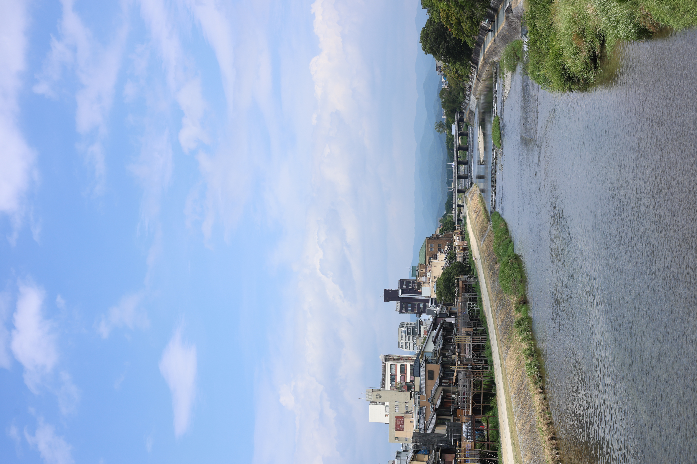
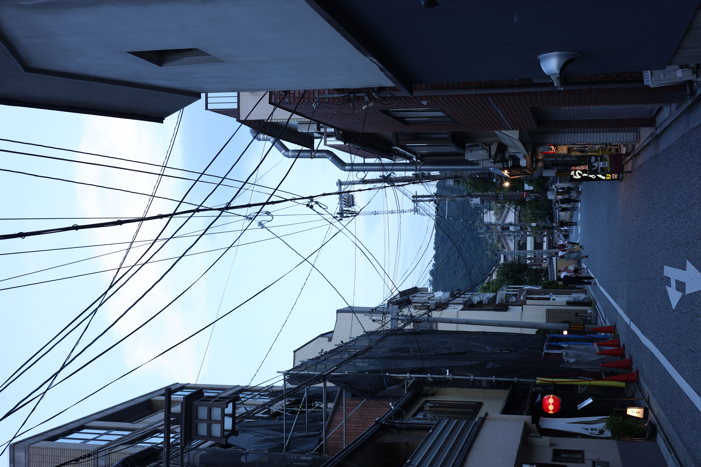
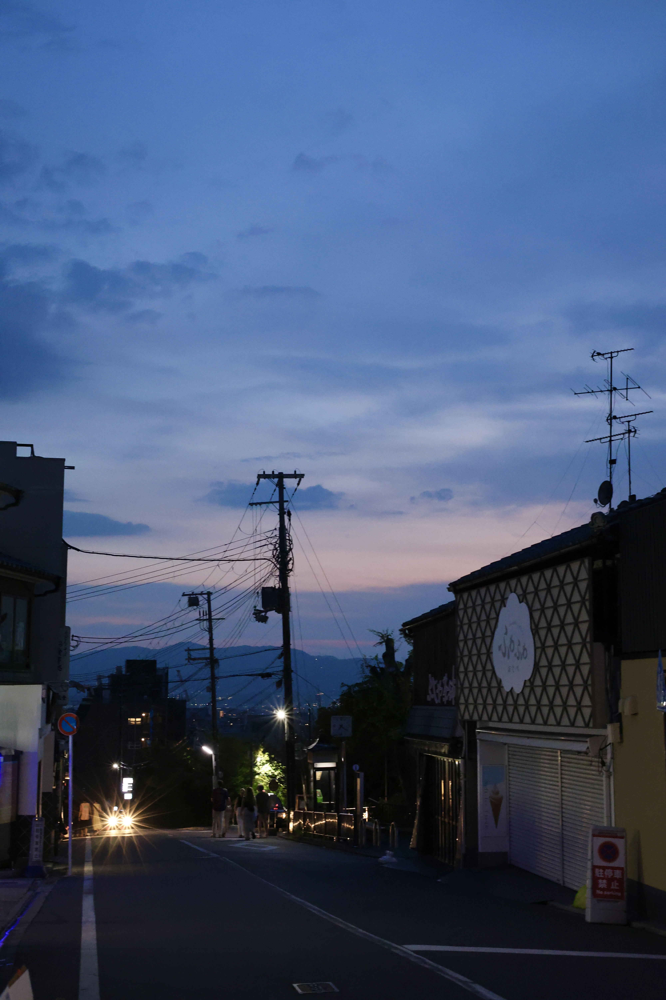
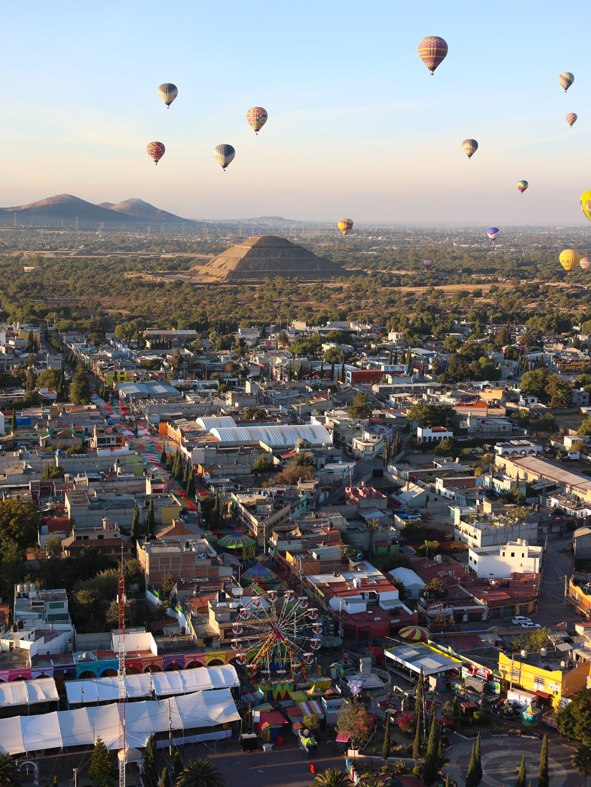
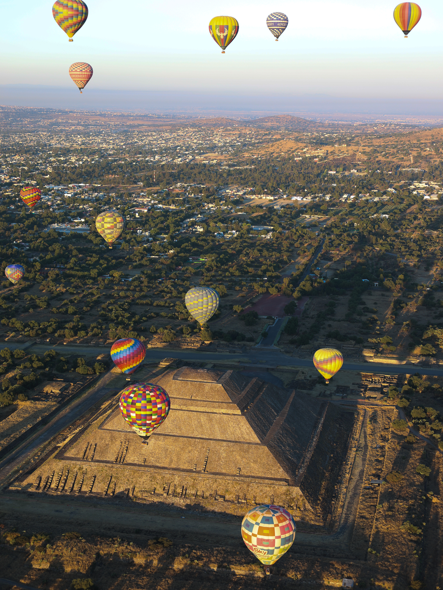
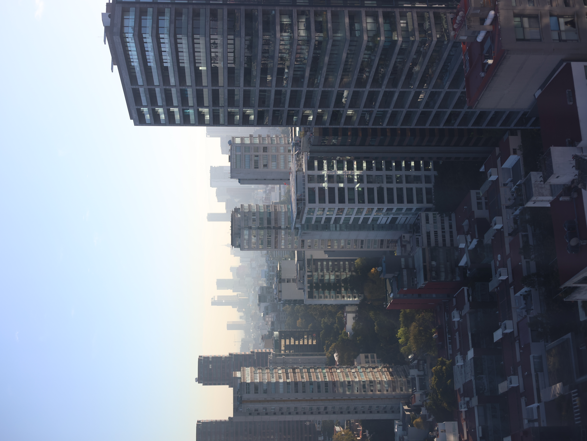
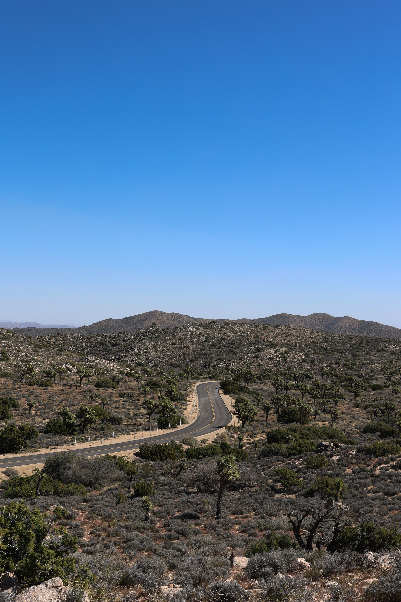
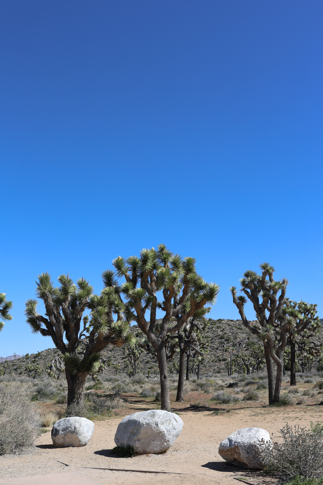
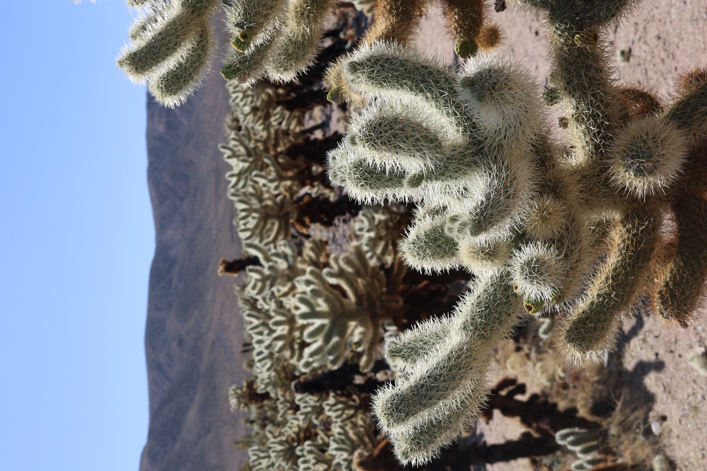

Computer vision researcher, traveler, and photographer — building AI systems that see the world.
I'm a PhD candidate in Agricultural and Biological Engineering at the University of Florida (advisor: Prof. Yiannis Ampatzidis), with an MS in Electrical & Computer Engineering from UF and a BS in Computer Science from Xidian University. My work applies deep learning to precision agriculture — spanning transformer-based object detection, multi-object tracking, multimodal fusion, RGB-D/3D sensing, and time series prediction, with a focus on systems that deploy reliably on edge hardware in real field conditions.
Outside the lab, I enjoy traveling, hiking, photography, tennis, and working out.
Vehicle-mounted multi-sensor AI system for real-time object detection, 3D localization, sequence classification, and geo-referenced aggregation at scale — deployed across 3,696 objects in 3 real-world sites. 515% faster than manual baselines. Two peer-reviewed publications.
End-to-end ML system on edge hardware — YOLOv8n at 52 FPS for automated fruit counting, feeding a rigorous benchmark of 6 models (MLR, VAR, GBM, RF, LSTM, TCN) for weekly yield prediction. Best model achieved R²=0.908. Published in Computers and Electronics in Agriculture, 2025.
Built a multi-modal sensing pipeline using a Hokuyo UTM-30LX 2D LiDAR and RGB-D depth camera with ROS 2, combining SLAM-based 3D mapping (Cartographer) with OpenCV edge detection and polygon segmentation to quantify greenhouse strawberry canopy geometry.
Proposed a systematic YOLOv7 head pruning strategy and a physics-informed tracking algorithm (IBTA), replacing Kalman Filter with known camera motion priors — achieving 21.5% FLOPs reduction and outperforming SORT-based baselines by 12.3% MOTA.








